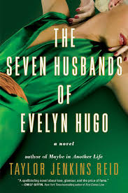

En populär roman av Taylor Jenkins Reid om den berömda Hollywoodstjärnan Evelyn Hugo, som i hög ålder väljer att avslöja sanningen om sitt liv för en journalist. Genom berättelsen får man följa hennes resa till berömmelse, hennes sju äktenskap och de hemligheter hon gömt i många år. Boken handlar om kärlek, ambition, identitet och hur svårt livet bakom kändisskapet kan vara. Buy Book